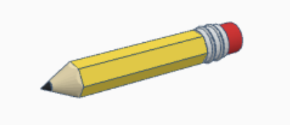
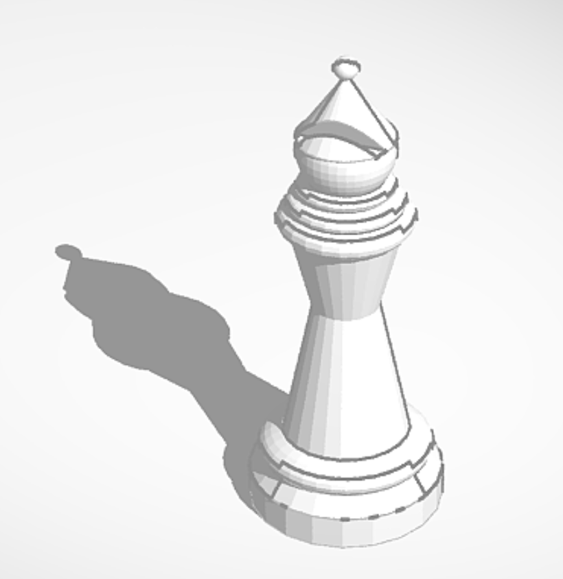

3D Pencil

I made this 3D pencil using a website called Tinkercad.
When I want to print this model I can copy the link of the model and put it on a 3D printer, altho I did not print it.
I think one of my struggles was that the cone,
the part that the color came out, did not line up very well.
Worm
I made this 3D worm in ET class.
I printed this worm in tinkercad and then built the secret from microbit.
I made an arm to push the front of the worm so it can move but it can only front.
In the code I made it to turn the arm every 1 second it was very slow.
I struggled with the worm moving because it moved but did not go forward so I put double sided tape to make it stick on the ground.
If I do this again I will make it bigger and faster.
bishop

I made this bishop in ET with tinkercad.
Tinkercad is a website where we can make 3D models.
It was a little hard making the face because it is a circle and a triangle together.
When I was making this project I only looked at a picture and made it.
I really enjoyed making it because it was fun watching the picture and making it.
if i can make it again I will make the bottom smaller.